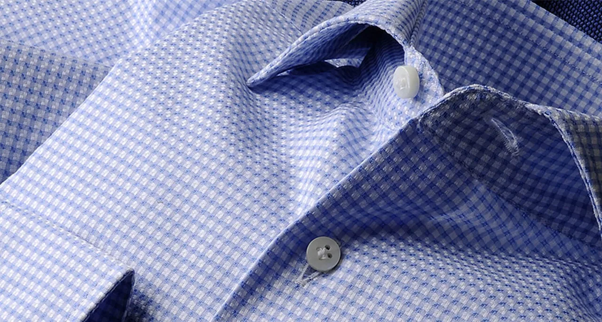
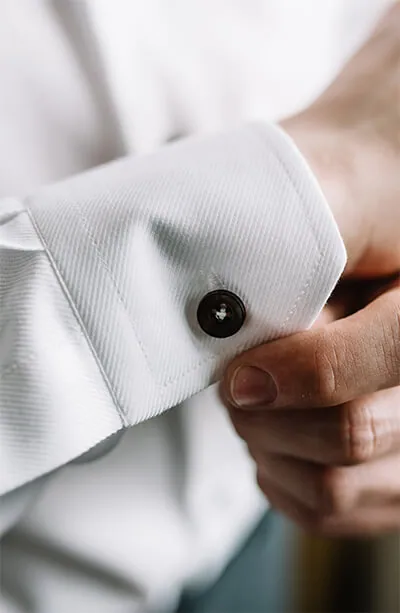
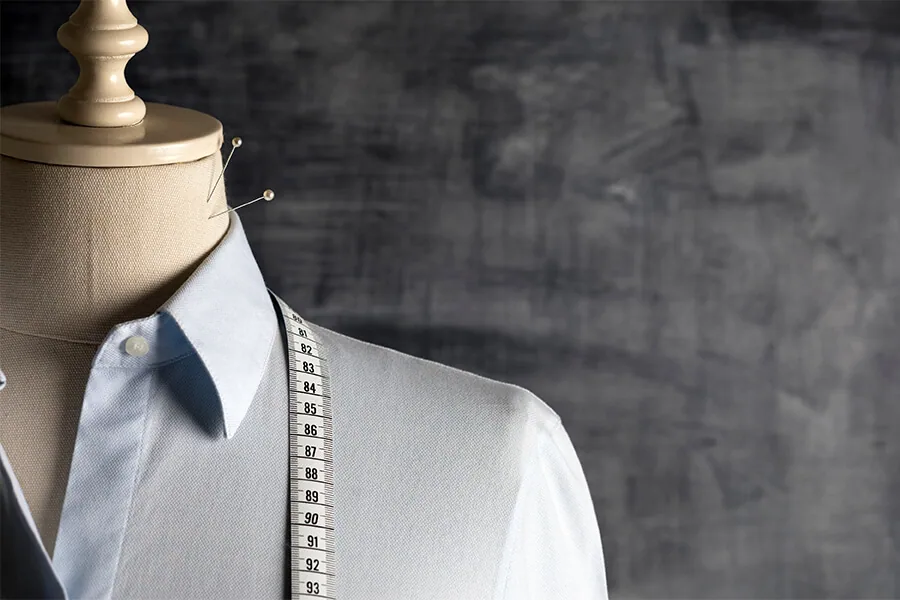
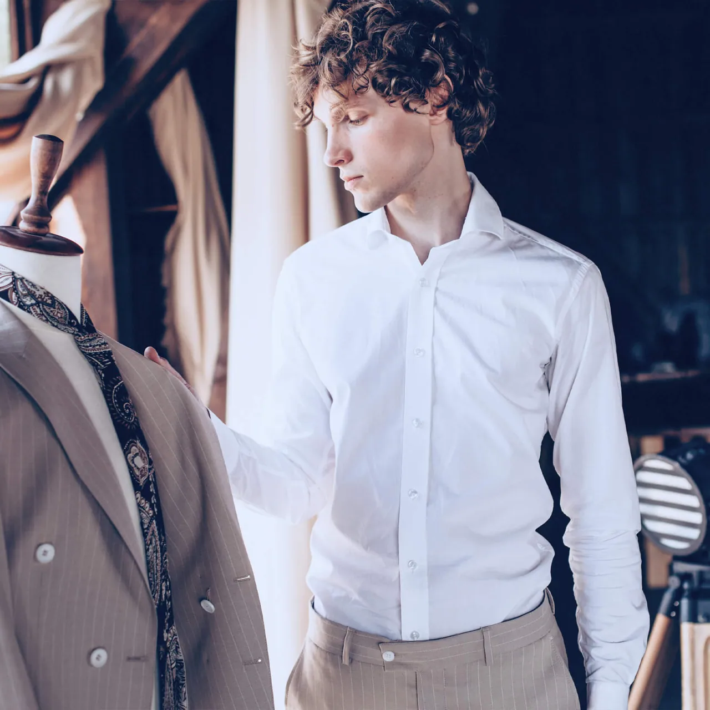
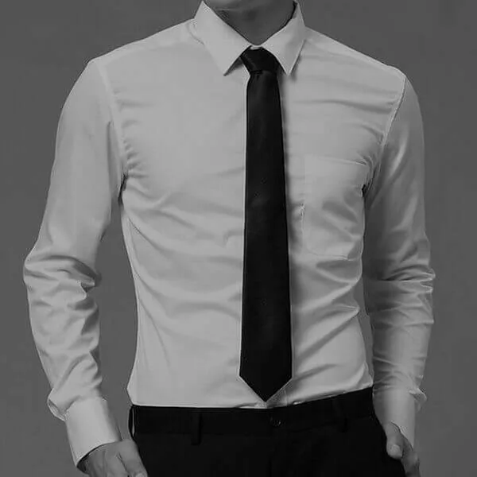
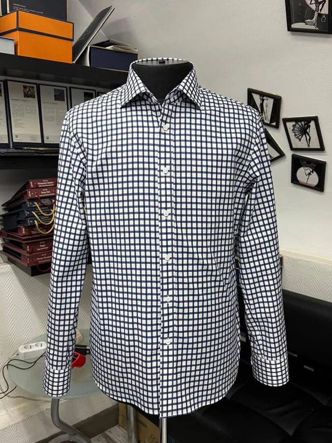
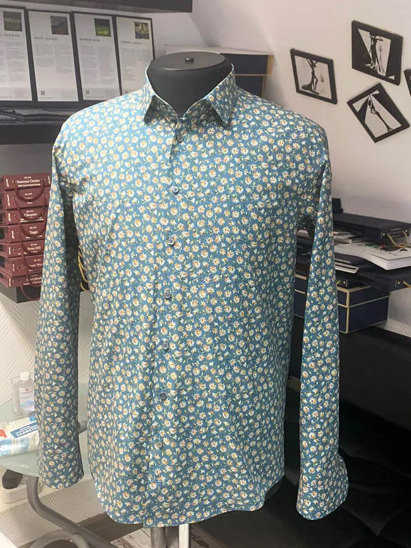
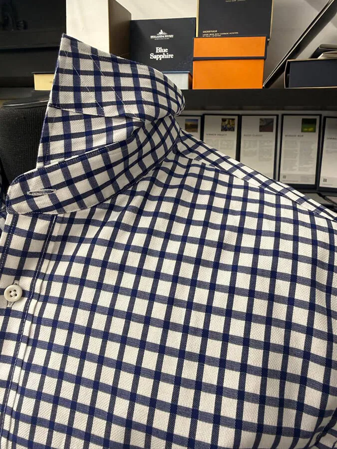
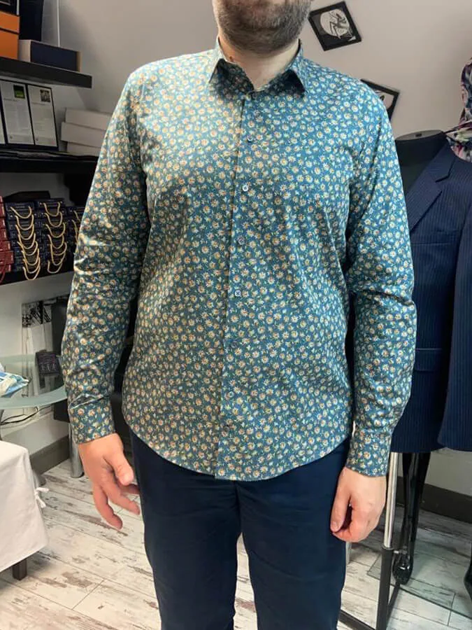

Индивидуальный пошив
Мужская сорочка
Сорочка для работы, торжества или свободного дня. Вы выбираете воротник и манжеты, мы снимаем мерки с обеих рук и уточняем посадку.

Крой и посадка
Цвет и рисунок подбираем к пиджаку или для самостоятельной носки. Обсудим форму воротника, застёжку, манжеты под пуговицы или запонки.
На первой примерке
При застёгнутом воротнике остаётся место для одного-двух пальцев. Проверяем планку на груди, длину рукава до основания большого пальца и запас длины при посадке.
Первая встреча — 1 час, первая примерка — 30 минут, финальная — 40 минут.

Какая ткань подойдёт
Хлопок, шёлк, лён и поплин входят в сорочечный ассортимент. Для прохладной погоды можно рассмотреть фланель, для неформальной сорочки — деним.
Как складывается цена
Цена зависит от ткани, расхода и ручных деталей. Стоимость монограммы и дополнительной отделки уточняем на встрече.
Ткани и поставщики

Фасоны и детали
Подборка кроя, фактур и отделки для разговора с портным.








Из галереи ателье








Первая встреча
Сравним образцы и снимем мерки на Тверской, 9с7. Для посещения нужна предварительная запись.